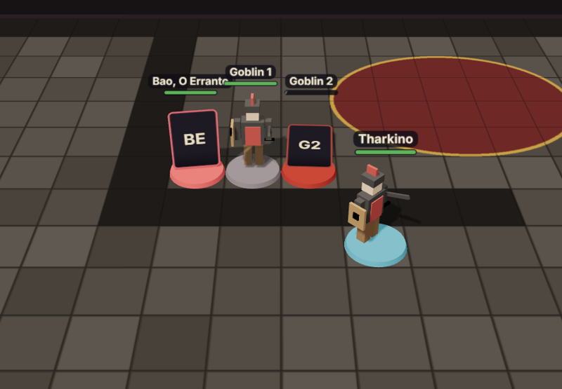
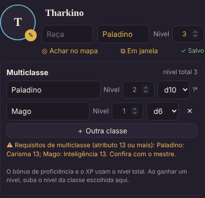
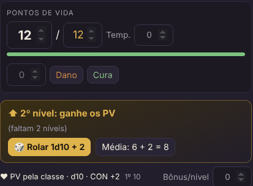

v5.6 — Vista 3D (04/11/2026)

O mapa virou tabuleiro. O botão 3D, no canto do mapa, mostra a cena em três dimensões: o mapa é o chão, cada token é uma miniatura com sombra, e a câmera gira e aproxima como você quiser. Cada um liga para si — a TV da sala em 3D, o mestre em 2D, por exemplo.
Quem tiver um modelo 3D (arquivo .glb) põe na ficha, em Miniatura 3D; o mestre põe nos tokens e nas fichas
do bestiário. Sem modelo, o token aparece como miniatura de papelão, em pé, com a imagem dele. As miniaturas andam
até onde você solta, tombam com 0 PV e ganham um anel dourado no turno delas.
Experimente: 1. Na ficha, abra Miniatura 3D e clique Usar o exemplo. 2. Clique 3D no canto do mapa. 3. Arraste a sua miniatura; gire a câmera com o botão direito (ou dois dedos no celular); ⊙ alterna para a vista de cima.
Veja no manual: Vista 3D
v5.5 — Biblioteca: magias e itens (01/11/2026)

O compêndio virou biblioteca. Além das páginas do mestre, o 📚 Compêndio ganhou duas abas com o conteúdo aberto do D&D 5e (o SRD), em português:
- ✨ Magias — as 319 magias do SRD, com os nomes do Livro do Jogador. Com o personagem escolhido, a lista mostra só o que ele pode conjurar, pelas classes e níveis da ficha — multiclasse incluída. Toque na magia para ver o cartão e ＋ Adicionar à ficha: ela aparece em Magias, separada por círculo, com a marca de preparada.
- 🎒 Itens — armas, armaduras, equipamento, ferramentas, pacotes e montarias, com preço e peso. ＋ Pôr na mochila cria o item pronto: a espada já ataca com o dano certo, a armadura já entra na CA.
- ✨ Itens mágicos — só o mestre vê. Escolha o item, a base (para Arma +1, Língua flamejante…) e 🎁 Dar a….
A lore do seu mundo continua na aba 📄 Páginas, que é do mestre.
Experimente: 1. Abra 📚 Compêndio → ✨ Magias: a lista já vem filtrada pelas classes da sua ficha. 2. Toque numa magia e clique ＋ Adicionar à ficha; depois veja em Ficha → Magias. 3. Em 🎒 Itens → Pacotes, ponha um Pacote de explorador na mochila.
Veja no manual: Biblioteca: magias e itens · Magias da ficha
v5.4 — Multiclasse (01/11/2026)

Mais de uma classe por personagem. ＋ Multiclasse abre a lista de classes: cada uma com o nível e o dado de vida. O cabeçalho mostra "Paladino 2 / Mago 1" e o nível total, que vale para a proficiência e o XP.
A ficha segue as regras do capítulo 6 do Livro do Jogador: os PV de cada nível novo usam o dado da classe que subiu, os dados de vida ficam em montes separados por tipo, os requisitos de atributo 13 aparecem como aviso, e os espaços de magia são sugeridos pela tabela de conjurador multiclasse (com o bruxo à parte).
Experimente: 1. Clique ＋ Multiclasse e escreva Mago na linha nova. 2. Veja o quadro "⬆ Mago 1: ganhe os PV" e role o d6. 3. Abra Magias e clique Usar esses na sugestão de espaços.
Veja no manual: Multiclasse
v5.3 — PV pela classe (01/11/2026)

A classe define o dado de vida. Ao escolher a classe na ficha (há uma lista com as do Livro do Jogador), o dado de vida já vem certo: d12 para o bárbaro, d10 para o guerreiro, d6 para o mago…
PV que acompanham o nível. Com ❤ PV pela classe ligado, o 1º nível vale o máximo do dado + CON, e a cada nível novo aparece um quadro para rolar o dado ou pegar a média. A rolagem sai no chat para todos, e os PV máximos e atuais sobem sozinhos. Se a CON subir, os PV acompanham em todos os níveis. O mestre decide se a mesa deixa o jogador escolher, sempre rola ou sempre usa a média.
Experimente: 1. Escreva Guerreiro na classe do seu personagem: aparece "Dado de vida: d10". 2. Clique ❤ PV pela classe (d10). 3. Mude o Nível para 2 e clique 🎲 Rolar 1d10.
Veja no manual: Classe, dado de vida e PV por nível
v5.2 — Equipamento e ficha em janela (01/11/2026)

Equipamento e mochila. A ficha ganhou um boneco com os espaços do corpo (cabeça, pescoço, capa, armadura, as duas mãos, luvas, dois anéis, cinto e calçado) e uma mochila. Cada item tem um desenho do tipo dele e a borda na cor da raridade, e a arte final entra quando você quiser, escolhendo a imagem ou colando com Ctrl+V.
A ficha cuida das regras: arma de duas mãos ocupa as duas, arma versátil pergunta como você vai usar, no máximo 3 itens sintonizados, CA calculada pela armadura e pelo escudo, ataques das armas equipadas com bônus e dano já prontos, e a carga contra 7,5 × Força.
Ficha em janela. Dois cliques no token (ou ⧉ Em janela) abrem a ficha por cima do mapa. O mestre pode deixar a de cada jogador aberta lado a lado. A ficha de um colega abre só para olhar o equipamento.
Experimente: 1. Na sua ficha, em Equipamento e mochila, clique + Item e escolha o modelo Espada longa. 2. Toque na espada e escolha Equipar com as duas mãos. Veja o ataque aparecer em Ataques com o d10. 3. Crie um Escudo e arraste para a mão esquerda: a espada volta para uma mão e a CA passa a contar o escudo (+2). 4. 👑 Na ficha de um jogador, 🎁 Dar item: ele recebe um aviso na hora. 5. Dê dois cliques no seu token.
Veja no manual: Equipamento e mochila · Ficha em janela
v5.1 — Linux e Mac (27/10/2026)
A mesa roda também no Linux e no Mac, com os atalhos instalar.sh, iniciar.sh, online.sh,
atualizar.sh e redefinir-senha.sh. O online.sh baixa sozinho o programa do link e mostra o endereço para os
jogadores num terminal só; Ctrl + C fecha tudo e salva a campanha.
O atualizar.bat passou a atualizar só quando a versão do GitHub é mais nova.
Veja: Instalação no Linux e no Mac
v5 — Névoa, régua e uma ficha mais completa (27/10/2026)

No mapa: névoa de guerra (o mestre revela aos poucos; monstros na névoa nem chegam aos jogadores), régua em metros que todos veem ao vivo, áreas de magia (esfera, cone, linha, cubo), desenho livre, setas e borracha, e as condições aparecem como ícones nos tokens.
Na ficha: condições, inspiração, testes contra a morte com rolagem automática, espaços de magia, dados de vida para o descanso curto, XP com aviso de subir de nível, moedas, e o aspecto mágico e o anel, que só o mestre escreve.
Para o mestre: calendário do mundo no topo da tela (Harptos, com meses editáveis), descanso curto e longo para o
grupo, fila de memórias nos segredos para devolver as memórias uma de cada vez, imagens em lote no bestiário, e o
atualizar.bat.
Experimente: 1. 👑 Clique em 🌫, marque Ligada e arraste ◯ Revelar em volta do grupo. 2. Use 📏 para medir até a porta e ◯ para ver quem a bola de fogo pega. 3. 👑 Clique na data no topo e faça um 🌙 Descanso longo. 4. 👑 Crie um segredo com Pôr na fila de memórias de… e libere com Liberar próxima.
Veja no manual: Ferramentas do mapa · Névoa · Calendário · Segredos
Versões anteriores
- v4.1 (15/10/2026): a biblioteca de monstros abre de novo (o arquivo ficava fora do pacote).
- v4 (15/10/2026): cartões das rolagens na tela, bestiário com 334 monstros do SRD, ajuste de ND, medidor de dificuldade do encontro e painel do token de monstro com ataques roláveis.
- v3 (14/10/2026): a grade passa a ser definida por quadrados na largura do mapa (token "invisível" em mapas grandes), tokens novos piscam para você achar, e a documentação.
- v2: pontos de backup, restaurar a campanha e Salvar e encerrar a sessão.
- v1: diário do grupo, compêndio do mestre e o seletor de fichas.
- v0: a primeira mesa: mapa com grade, tokens redondos, ficha, dados, iniciativa e segredos.